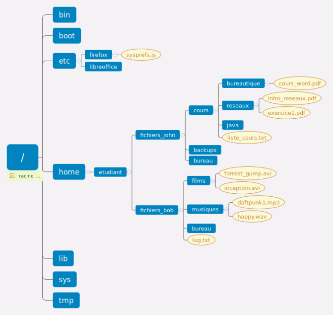
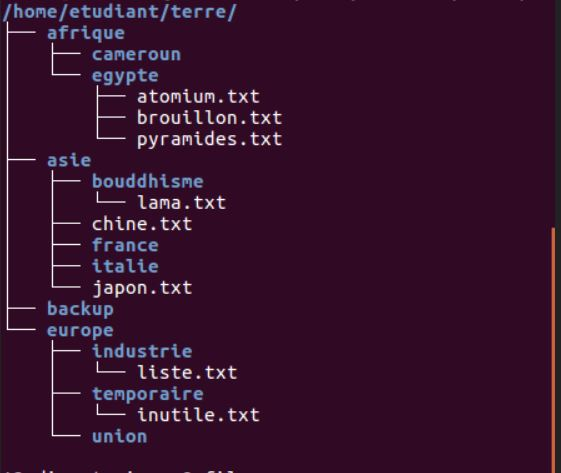
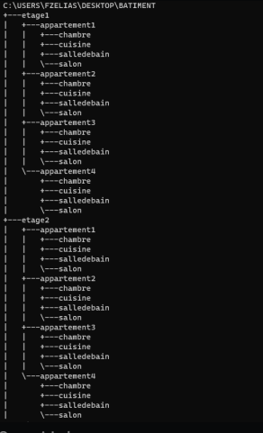

Presentation des exercices de la semaine
Les outils necessaires
Pour executé les commandes Bash il vous faut un terminal de commandes (un peu comme le CMD de windows) Vous pouvez utilisé l'OS Linux/Ubuntu ou encore télécharger le terminal Git Bash.
Exercice 1 Bash
Dans le premier exercice, nous devions créer un dossier "LinuxBash" et créer 5 sous dossiers nommés Jour 1 à Jour 5 en une seule ligne de commande.
cela doit ressembler à ceci:
Nous avons pu constaté 2 solutions possibles
- Solution 1: mkdir -p LinuxBash/{Jour1,Jour2,Jour3,Jour4,Jour5}
- Solution 2: mkdir -p LinuxBash/Jour{1..5}
Exercice 2 Bash
Dans le deuxième exercice, nous devions reproduire l'image ci dessous en partant du dossier "etudiant":
Nous avons appris à utilisé la commande "mkdir" pour créer des dossiers dans l'exercice précédent mais ce n'est pas la même chose pour créer un fichier, la commande qui est utilisée est "touch"
Voici la solution : mkdir -p etudiant/{fichiers_john/{cours/{bureautique,reseaux,java},backups,bureau}, fichiers_bob/{films,musiques,bureau}} && touch etudiant/{fichiers_john/cours/{bureautique/cours_word.pdf, reseaux/{intro_reseaux.pdf,exercice1.pdf},list_cours.txt},fichiers_bob/{films/{forrest_gump.avi,inception.avi}, musiques/{daftpunk1.mp3,happy.wav},log.txt}}
Exercice 3 Bash
Dans le troisième exercice, nous devions donné le chemin absolu d'un fichier ou d'un repertoire en ce basant sur l'arborescence de l'exercice 2 (voir image ci dessus).
Si vous voulez vous entrainez, vous pouvez telecharger le fichier .pdf

Pour vous corrigez, vous pouvez téléchargé le document ci-dessous pour comparer vos réponses !

Exercice 4 Bash
Dans le quatrième exercice, nous devions reproduire l'arborescence ci dessous en partant du dossier "etudiant":
Comme nous avons appris à utilisé la commande "mkdir" pour créer des dossiers et "touch pour créer" des fichiers, il est facile de realisé cela.
Voici la solution: mkdir -p etudiant/terre/{afrique/{cameroun,egypte},asie/{bouddhisme,france,italie}, backup,europe/{industrie,temporaire,union}} && touch etudiant/terre/{afrique/egypte/{atomium.txt,brouillon.txt,pyramides.txt}, asie/{chine.txt,japon.txt,bouddhisme/lama.txt} europe/{industrie/liste.txt,temporaire/inutile.txt}}
Exercice 5 Bash
Dans le cinquième exercice, comme pour l'exercice 3 nous devions completé un fichier .pdf sur:
- Les commandes générales
- Créer/supprimer des fichiers et répertoires
- copier/deplacer/renommer des dossiers/fichiers
Pour vous corrigez, vous pouvez téléchargé le document ci dessous pour comparer vos reponse !
Exercice 6 Bash
Dans le sixième exercice, nous devions créer dans notre bureau un dossier "batiment" composer de 2 dossiers étages (étage 1 et étage 2) et dans chaque étage, 4 dossiers appartements (1..4) qui contiennent chacun un dosier chambre, un dossier cuisine, un dossier salle de bain et un dossier salon. Voici à quoi cela devrait ressembler:
Facile à faire avec "mkdir" toujours pour créer des dossiers et "touch" pour créer des fichiers et rappelez vous aussi la solution 2 de l'exercice 1
Cela devrait donné ceci: mkdir -p batiment/etage{1..2}/appartement{1..4}/{salledebain,chambre,cuisine,salon} Simple et efficace !